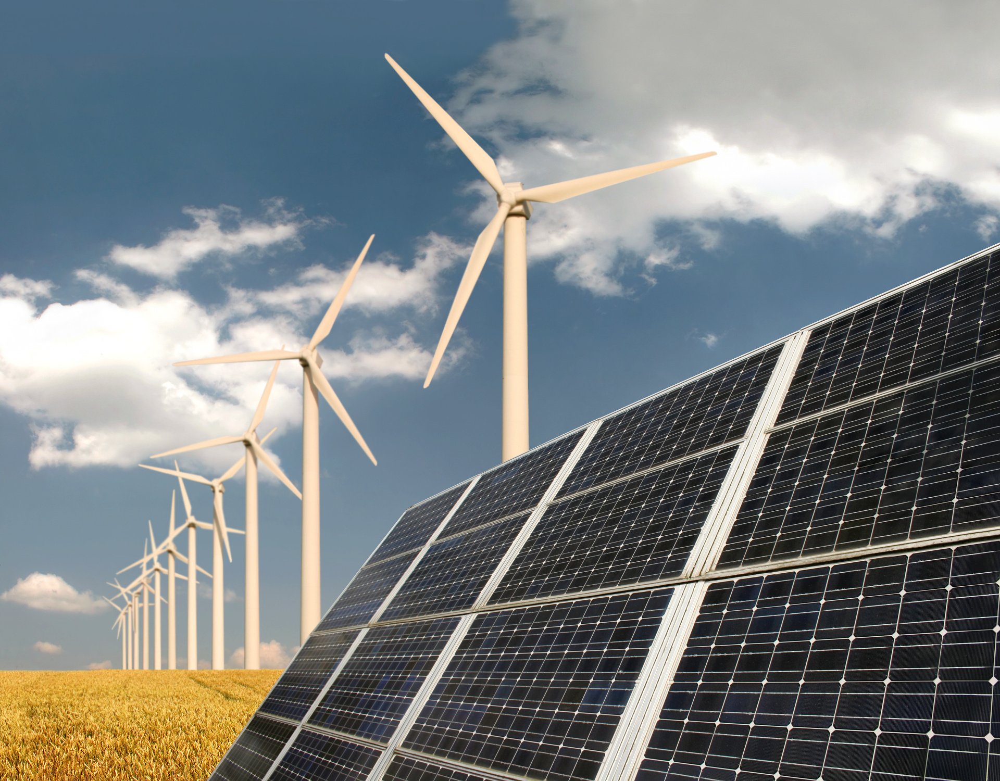

What with rising costs and the depletion of energy resources, humanity needs to find other solutions for energy. For years, free energy has existed, yet most of the population is unaware. At LIH, we want to teach people how to build their own solar panels and miniature wind turbines in order to produce energy, saving on costly bills but more importantly, helping the planet.
“The scientific man does not aim at an immediate result. He does not expect that his advanced ideas will be readily taken up. His work is like that of the planter — for the future. His duty is to lay the foundation for those who are to come, and point the way. He lives and labors and hopes.” Nikola Tesla

Solar is a renewable free source of energy and is sustainable, unlike fossil fuels such as coal, gas and oil. Solar energy is also non-polluting and does not emit greenhouse gases. The solar electricity that is produced, can supply all your needs and/or partial energy consumption and can even be sold back to the grid. Contrary to popular belief, solar photovoltaic systems are not complicated to build or to install on your roof, it just takes some time and patience.
Over the past few years, wind power has started to become one of the fastest growing sources of energy in the world. With the right tools and equipment, we can teach you how to build a miniature wind turbine that can be scaled up or down, in order to create the exact amount of electricity, depending on your requirements.
